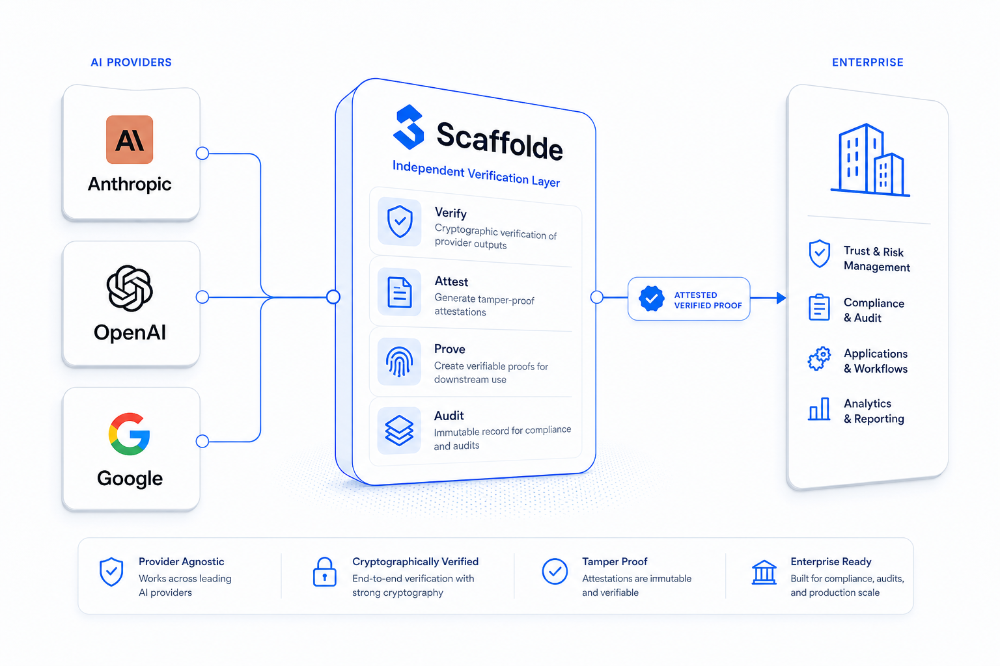
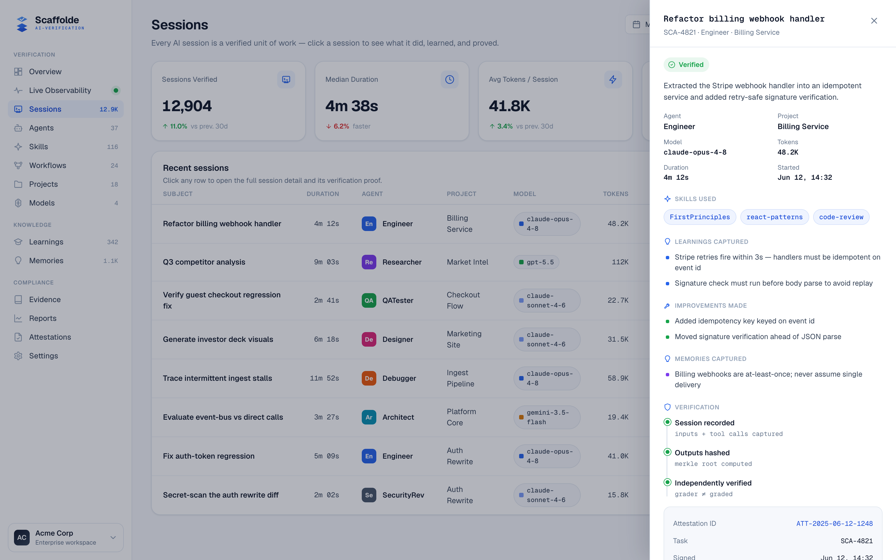

Scaffolde is an independent layer that sits outside the model vendors — between your AI and the people who must trust it. Here’s how a run becomes a proof.

When the company that builds the model also certifies that the model worked, the certificate is worth nothing. Scaffolde sits in the middle — connected to Anthropic, OpenAI, and Google, but owned by none of them — so the party signing the proof has no stake in any model’s reputation.
That independence is the product. It’s what makes a Scaffolde attestation something you can hand to a regulator, an auditor, or a customer and have it mean something.
Four steps turn an AI run into a tamper-evident record anyone can check.
Acceptance criteria are set before the AI does the work. When the run finishes, its ask, actions, and output are checked against those criteria.
A party with no stake in the model signs the result — recording what was asked, what was done, and whether it passed.
The action trace, evidence, and attestation are sealed into a SHA-256 proof bundle you can open, export, and verify.
Every proof rolls up into a running, queryable record — pass rates, provider coverage, and full history for any auditor.

You can’t trust an AI’s word that it did the work. You can trust an independent, tamper-evident record of how it did the work.
Open the live dashboard and walk a single run from ask to attestation yourself.